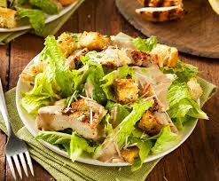

la ensalada César fue creada en 1924 en Tijuana, México, por el chef Cesare Cardini, quien improvisó la receta con
ingredientes limitados.
ensalada cesar

datos sobre este platillo
ingredientes
- 2 1 lechuga romana
- 1 1 diente de ajo
- 11/4 taza de queso parmesano rallado
- 1 Jugo de limón
- 1 cucharadita de salsa Worcestershire
- 1 1/4 taza de aceite de oliva
- 1 Sal y pimienta al gusto
paso a paso
paso 1.
Lava bien las hojas de lechuga romana y córtalas en trozos medianos. Incorpora el queso parmesano: Añade el queso parmesano rallado por encima para dar sabor.
Lava bien las hojas de lechuga romana y córtalas en trozos medianos. Incorpora el queso parmesano: Añade el queso parmesano rallado por encima para dar sabor.
paso2.
Machaca el ajo y mézclalo en un bowl con el jugo de limón, la salsa Worcestershire y el huevo (si usas mayonesa, omite el huevo).
Machaca el ajo y mézclalo en un bowl con el jugo de limón, la salsa Worcestershire y el huevo (si usas mayonesa, omite el huevo).
paso3.
Añade sal y pimienta al gusto.
Añade sal y pimienta al gusto.
paso4.
Poco a poco, agrega el aceite de oliva mientras bates para que emulsione.
Poco a poco, agrega el aceite de oliva mientras bates para que emulsione.
paso5.
Coloca la lechuga en un bol grande y vierte el aderezo sobre ella. Mezcla bien para que todas las hojas queden cubiertas.
Coloca la lechuga en un bol grande y vierte el aderezo sobre ella. Mezcla bien para que todas las hojas queden cubiertas.
paso6.
Añade los crutones: Espolvorea los crutones sobre la ensalada.
Añade los crutones: Espolvorea los crutones sobre la ensalada.
paso7.
y ahora solo queda servir y disfrutar de nuestra rica torta
y ahora solo queda servir y disfrutar de nuestra rica torta